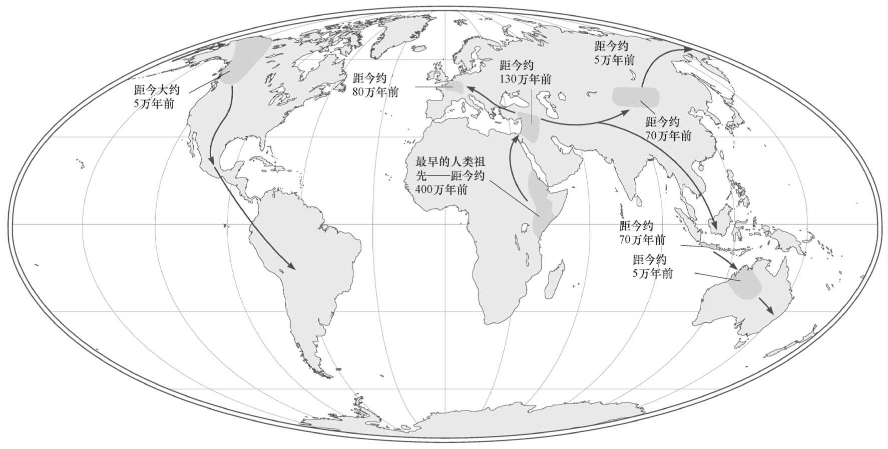
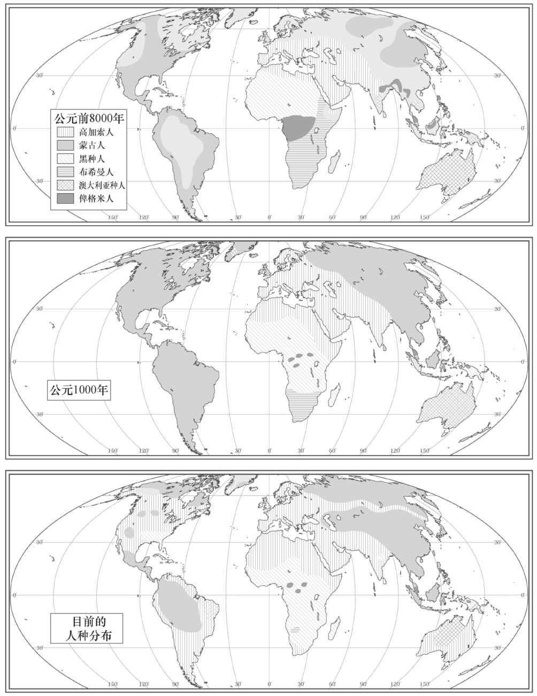

人们通常以为人口爆炸是当今时代特有的现象，其实不然。每一次壮观的人口激增都是在生产技术获得重大突破时发生的。原因很明显：技术的发展导致生产率的提高，从而使能供养的人口大大增加。按人类当时的标准，从旧石器时代的初期到后期，技术实际上有了很大的进步，这就导致了人口的急剧增长。据估计，旧石器时代初期，原人的人口数为12.5万人，而到了距今1万年的旧石器时代末期，即农业革命前夕，人类的人口增为532万人。人口增长42倍以上，可见比得上后来随历次技术革命而出现的人口爆炸。
从旧石器时代，还可得出另一个人口统计模式（这一模式后来曾多次重复），这就是，在技术革命中居首位的人口的增长是不均衡的，这种不均衡使人口分散到更广阔的区域。自地球上出现生命起，这一模式便一直成立，并且与人类学家M. D. 萨林斯（M. D. Sahlins）和E. R. 塞维斯（E. R. Service）所提出的文化支配定律相一致。该定律认为：
……能有效地开发一定环境中的能源的文化体制，常常会牺牲开发效率较低的体制，以求得自己在该环境中的扩大……高级体制的特点就在于能比低级体制更有效地开发各种不同的资源，因而在大多数环境中，它们比后者更有效，其活动范围也更广阔。[9]
无论何时，适应性最强的种类，即利用自然环境最有效的种类，总是那些在其活动范围中占据优势、不断扩展其活动范围的种类。因之，只有原始的卵石工具且又缺衣少穿的更新世灵长类动物，无法使自己的活动范围超出温暖的热带大草原。智人掌握了更先进的技术，因而对大自然的适应能力也更强，不仅能向南进入非洲和东南亚的热带雨林地区，而且能朝北跨入西伯利亚的冻土地带。
人类拥有的高超技术也部分地表现在建造不同类型的渡水设备方面。这些设备的建造取决于当地的自然资源，可以分为四个基本类型：皮划艇、树皮船、浮筏和独木舟。有了这些不同的船只，早期人类就能够横渡河流、湖泊，甚至还能够穿越从非洲到欧洲、从东南亚到澳大利亚、从西伯利亚到北美的广阔水域。这一迁移活动在冰河期进展得更为顺利，因为在冰河期，大量海水结成了冰盖，海平面降低，诸大陆之间形成了陆地桥。在这些境况下，人类的足迹已遍布除南极洲之外的所有大陆，和与人类形影不离的狗一起，成了世界上分布最广的动物（见地图1）。

地图1 早期人类的迁移
在人类向各地分散的同时，逐步有了种族上的差别，出现了各种在肤色、发型和面型上有显著特点的所谓种族。一般认为，这些种族的形成，主要是由于人类的各个地域集团适应了各自不同的环境，而且彼此较为隔绝。关于人种差别，有一点很重要，这就是人种差别发生得很晚——在智人出现之后。因此，现代的各个种族都源自作为人类已获得充分发展的同一祖先。这就说明了为什么欧洲人能与他们所发现的所有地区的各个种族通婚；也说明了为什么人类现存的各个种族在与生俱来的智力方面彼此没有很大差别——这一点实际上已为所有的人类学者所赞同。旧石器时代晚期的原始人或当代的澳大利亚土人与其他任何种族的成员一样，如有机会受教育，也大有希望毕业于大学。
各地区种族形成时的确切情形现在还不清楚，也许永远无法了解。考古学家们在人类起源方面早已接受“非洲起源”理论；该理论认为，人类最早起源于非洲，然后从那里迁徙到其他大陆。由于世界各地新的考古发掘差不多每年都提供一些新发现，该理论和其他理论一道，如今正受到质疑。比如，最近在澳大利亚北部发现的石制工具表明，人类早在17.6万年前就在该地区活动，这就推翻了将人类迁移到这里的日期确定为5万至6万年前的一些传统理论。同样，传统理论所认定的人类最早迁移到中亚的时间，也因为最近在该地区出土的年代更为古老的人类化石和石制工具而站不住脚。
正在进行的考古发掘所揭示出来的差异是如此巨大、如此众多，所以考古学家们正在重新评价过去受到珍视的一些理论假设。有些人已开始质疑人类最早的起源地到底是在非洲还是在亚洲。还有一些被称为人类多起源论者的人则认为，人们永远不可能找到人类最初的起源地，因为全人类单一的发源地在任何地方都是不存在的。更准确地说，他们发现那种认为人类在不同地方独立进化的人类多起源理论要更可信一些。
尽管现在人们在人类起源和进化方面还没有达成一致，但可以肯定的是：到距今约1万年即最后一次冰河期的末期，各种族在全球的分布已和现在大致一样。高加索种人分布在欧洲、北非、东非和中东，并正在深入到印度和中亚；黑种人分布在撒哈拉沙漠（那时的水源比现在充足）和沙漠以南一带，而俾格米人和布希曼人则与他们后来的情况不同，分布在非洲的其余地方；还有一部分俾格米人即小黑人生活在印度和东南亚的森林地带，而印度、东南亚的其余的辽阔地区和澳大利亚则为澳大利亚种人所占据；最后，分布在东亚和美洲的是蒙古种人。
虽然这一种族分布与现在的情况大致相似，但是全球人种分布图（见地图2）却表明，到公元1000年时，全球各种族的分布情况已发生了根本的变化，并愈演愈烈，直至今日。我们后面就可以看到，这些变化是后来的技术革命所直接导致的。布希曼人、俾格米人和澳大利亚种人之所以会消失，美洲大部分地区的美洲印第安人之所以会越来越少，其真实原因就在于他们的发展速度赶不上技术革命。换言之，1万年前，白种人与布希曼人的人口数差不多，而今天，布希曼人仅占白种人的十万分之一，其实际原因也在于此。

地图2 全球人种分布
布希曼人的历史较之高加索种人和其他种族的历史有着霄壤之别，但这与各种族天赋才能上的差异毫无关系。我们将在第四编的结尾“历史上的种族”一节中再度谈到这一重要课题。在那一节中，我们将探讨造成不同种族历史的种种原因。
总之，值得注意的是，尽管人类分成了不同的种族，但是各种族成员的身材却都在日益增高。人类早期祖先的平均身高是4英尺6英寸，而现在人类的平均身高则是5英尺10英寸。人们认为这一增高应归功于两点：一是人类获得了丰富而稳定的食物供应，尤其是充足的动物蛋白的供应；二是现在的小孩都接受免疫，这就抑制了妨碍生长的疾病的侵袭。目前人类的身材还在继续增高，像中世纪骑士的盔甲，现在的成年男子大多穿不下。
［推荐读物］
对研究世界历史有着基础性辅导作用的书籍有G. Barraclough所著的The Times Atlas of World History（Times Books出版社，1991）和W. L. Langer所著的An Encyclopedia of World History（Houghton Mifflin出版社，1972）。还有配有绝佳插图的National Geographic Atlas of World History（Washington出版社，1997）。
>最近出版的关于早期人类历史的重要书籍有J. E. Pfeiffer所著的The Emergence of Man（Harper & Row出版社，1985）以及R. Lewin所著的In the Age of Mankind（Smithsonian Book出版社，1988），后一本书讲述了现在流行的关于人类史前和未来情况的理论。另有M. Wolpoff和R. Caspari合著的Race and Human Evolution（Simon & Schuster出版社，1997），该书叙述了关于人类起源的非洲起源论与多起源论的争论。最近发表的内容丰富的考察人类起源的著述是R. Gore写的The Dawn of Humans，见National Geographic（1977年5月号），文中还附有精美的插图。
有关旧石器时代妇女的地位，请参阅M. Ehrenberg所著的Women in Prehistory（British Museum出版社，1989）: R. R. Reiter主编的 Toward an Anthropology of Women（Monthly Review出版社，1975）: M. K. Martin和B. Voorhies合著的Female of the Species（Columbia University出版社，1975）；以及R. Bridenthal和C. Koonz共同主编的Becoming Visible: Women in European History（Houghton Mifflin出版社，1977）。
［注释］
[1]New York Times, April 23, 1996.
[2]C. C. Swisher et al., “Latest Homo erectus of Java，” Science（December 13, 1996）: 1870—1874: New York Times, December 13, 1996.
[3]Cited by E. Leacock, “Women in Egalitarian Societies，” in R. Bridenthal and C. Koonz, eds., Becoming Visible: Women in European History（Houghton Mifflin, 1977）, pp. 21, 22.
[4]B. Spencer, Native Tribes of the Northern Territory of Australia（London, 1914）, p. 36: and R. B. Lee, The !Kung San（Cambridge University, 1979）, p. 246.
[5]V. M. Bryant, Jr., “I Put Myself on a Caveman Diet Permanently，” Prevention, Vol. 3（September 1979）, pp. 128—137. More details on this subject can be found in Bryant's articles in Scientific American, Vol. 232（January 1975）: and in American Antiquity, Vol. 39, No. 3（1974）.
[6]A. R. Radcliffe-Brown, The Andaman Islanders（Free Press, 1948）, p. 192.
[7]K. Rasmussen, People of the Polar North（Lippincott, 1980）, p. 124.
[8]L. A. White, The Evolution of Culture: The Development of Civilization to the Fall of Rome（McGraw-Hill, 1959）, pp. 271, 272.
[9]M. D. Sahlins and E. R. Service, eds., Evolution and Culture（University of Michigan, 1960）, pp. 75, 79.